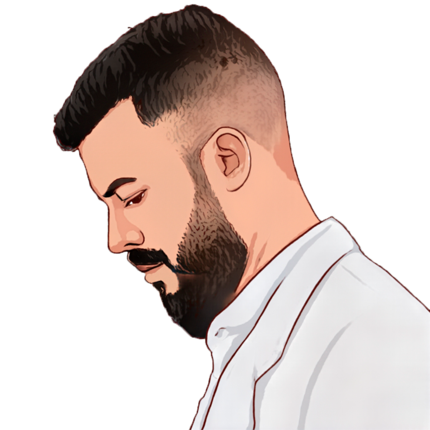

Adriel Lunière
Desenvolvedor Frontend Júnior


Sobre
Oi! meu nome é Adriel Lunière, seja bem-vindo(a)!
Sou apaixonado por tecnologia. Meu primeiro contato com programação foi em 2007, quando ainda estava no ensino médio. Apesar de ter gostado da área, só comecei a dar o devido foco em 2022, quando um amigo me apresentou o Desenvolvedor Frontend. Sempre tive o sonho de trabalhar com programação e atualmente comecei a colocar esse sonho em prática estudando HTML, CSS, JavaScript e React. Gosto muito de café, e meus principais hobbies são ler, jogar MMO RPG, ver animes e séries.